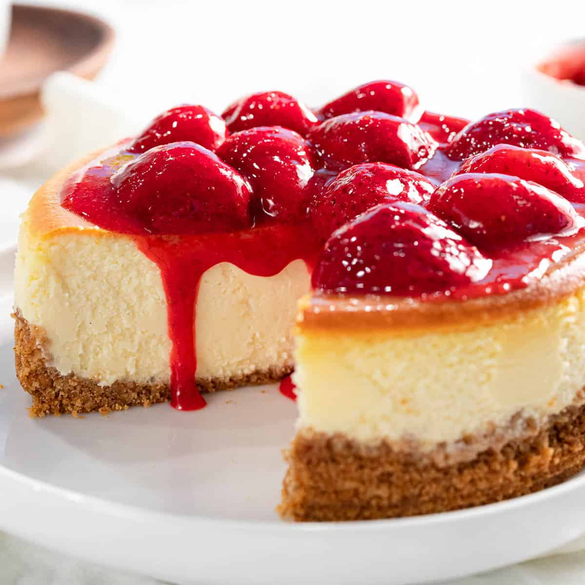

The Perfect Cheesecake Everytime!
An Article By Paulina Rios
View Live Tutorial of a Similar Recipe Here:
INGREDIENTS
- 1/4 package Cream Cheese
- 4 Eggs
- 1 container Sweetned Condensed Milk
- 1 Stick of Butter
- 1 package 'Marillas' Cookies
- 2 cups Milk
DIRECTIONS
- Blend cheese and eggs in blender, occasionally adding in milk
- crush 'Marillas' cookies and mix in with melted butter stick
- Take butter and cookie mixture and press onto the bottom of pan to make crust
- Por mixture from first step onto the pan
- Bake for 390 degrees for 50 minutes
- Wait once it's cooled then it's ready to eat!
PRO TIPS
- Make sure cake is completely cooled before serving
- you can substitute 'Marilas' cookies for Oreos!
- You can add glazed strawberries or any fruit topping of your choice
- Cake is good in the refrigerator for up to one week!
- Be sure to share with friends!!